深度神经网络在可以模拟更加复杂的情形，但是在上一章中，我们发现训练深度神经网络的时候会出现梯度消失的问题，从而导致模型训练失败。这一章，将会介绍可以被用在深度学习上的一些技术。
这章的主要内容是介绍一种应用最广泛的深度神经网络：卷积神经网络。我们将会了解到卷积，池化等概念，通过在之前的代码上利用这些技术进行优化达到了惊人的99.67%的准确率。
除此之外，本章还将介绍一些其他的基本神经网络，例如循环神经网络。在介绍完这些之后，还会介绍深度学习技术的发展现状及未来的发展方向。
一. 卷积神经网络
之前我们在进行MNIST数字分类的时候，输入数据是将每张图片按像素展开得到的784维向量，这样训练得到的结果虽然不错，但是仔细想想就会发现它的问题。对于图片来说，不同的不同的像素点之间的距离很远，旧的方法就完全没有考虑像素点之间的空间联系。这一节介绍的卷积神经网络就考虑了这种空间联系，并且训练迅速，在图像分类问题上得到了非常好的效果。
卷积神经网络涉及到三个基本思想：local receptive fields(局部感受野)，shared weights(参数共享)，pooling(池化)，接下来依次介绍。
Local receptive fields:
在之前的神经网络中，输入神经网络的数据是一个多维向量，与输入层连接的隐藏层的每一个神经元都和所有的输入层神经元连接。
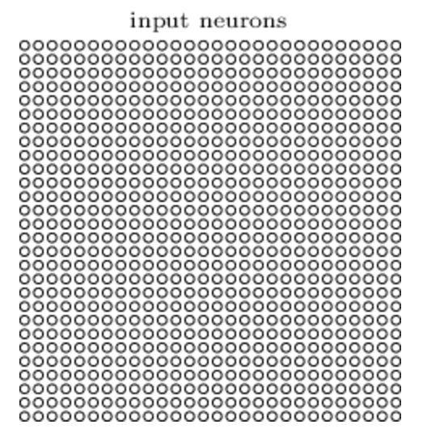
这样一副784个像素点的图片中的每一个像素点都是一个输入神经元，后一层的每个神经元和所有这些输入神经元都有连接。
local receptive fields局部感受野的概念就是后面一层的神经元只会和部分窗口下的输入神经元连接，例如，对于5*5的窗口：
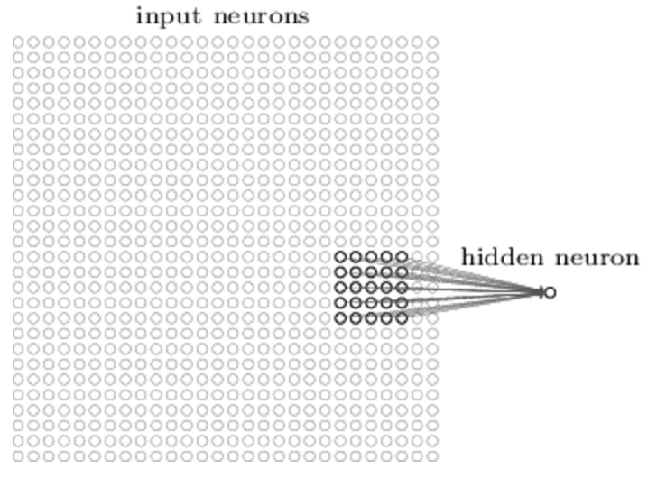
我们可以将窗口从左到右，从上到下进行平移，每移动一次，当前窗口下的输入神经元就对应一个隐藏层的神经元。
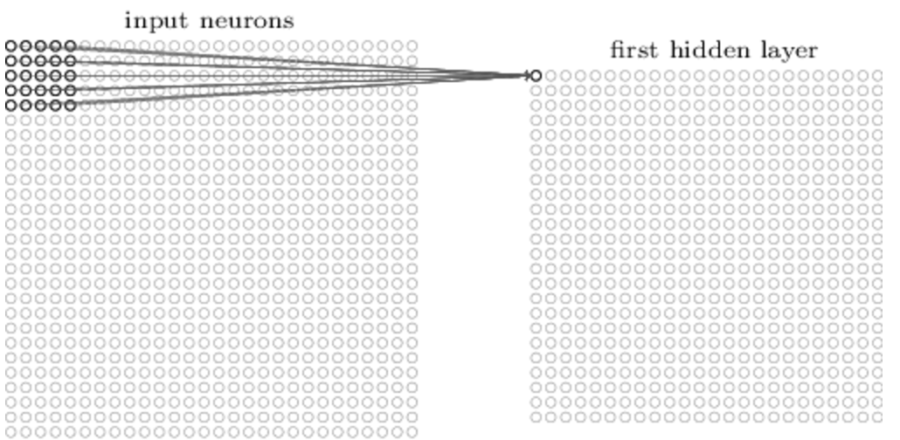
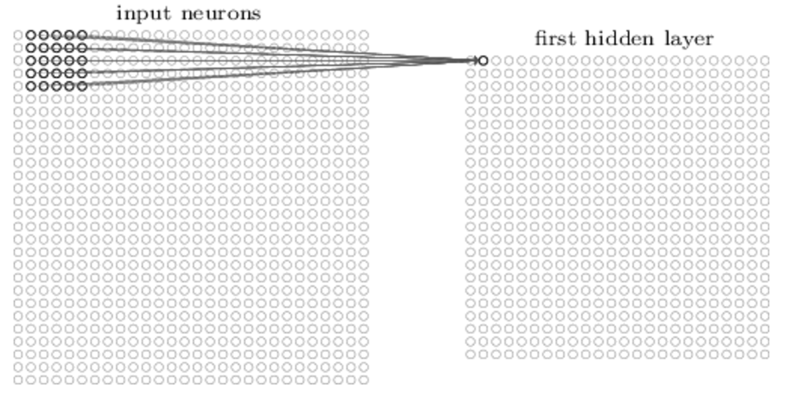
对于28*28的图像，使用5*5的窗口的话，一共可以移动23*23次，也就是说隐藏层将会有24*24个神经元。
上面的例子中，每次平移的步长为1，实际中这个步长其实也是可以根据需要改变的。
Shared weights and biases:
这里的参数共享说的是对于和输入层连接的24*24个隐藏层神经元，每个隐藏层神经元的参数是一样的，也就是说不同窗口和其对应的隐藏层神经元共用一套参数。对于24*24个隐藏神经元中的第j, k个神经元其输出为：
其中\(w_{l,m}\)对应着24*24个神经元中任意神经元与每个5*5窗口下的所有输入神经元连接的5*5个参数。这样就说明，第一个隐藏层中所有的神经元识别的是同一个特征，区别在于该特征出现在原图中的位置不同。基于这些原因，我们也把从输入层到隐藏层的这个映射关系称为特征映射，其中的共享权重和偏差作为决定了这个特征映射，通常也被成为一个核或滤波器。
上面我们在隐藏层中只用到了一种核，也就是只检测了一个特征，事实上我们也可以使用多个核来检测多个特征：
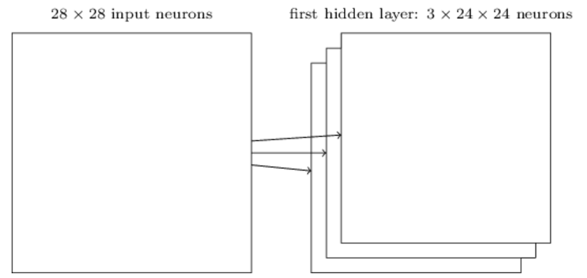
这个例子中就使用了3个5*5的核来检测三个不同的特征。实际中，可能使用更多的特征，比如我们随后的代码中就分别使用了20和40个核。
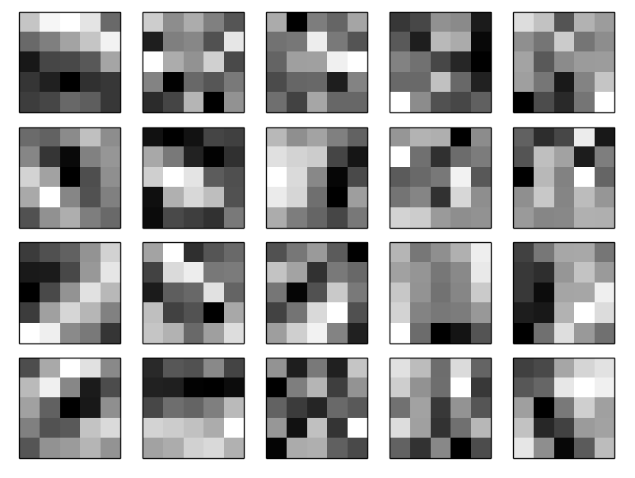
这个例子中的20幅图分别对应了20个不同的5*5核代表的权重，其中黑色方块代表高权重，白色方块代表低权重，这些图上的黑色区域就是该核所检测的特征。在这些特征图上，我们看到有很多自区域存在很明显的黑白分界，说明这里的确存在一些空间上的特征，至于这些特征是什么，我们并不是特别清楚，毕竟它不是非常规则的几何图形。
卷积的另外一个好处就是减少了需要学习的参数。考虑到最初的神经网络，在使用30个隐藏层神经元的情况下，一共有784*30（权重）+30（偏差）=23550个参数。而现在的话，5*5的核对应26个参数，如果使用20个特征，则有20*26=520个参数，减少了大概40倍。我们有理由相信这将大大减少训练的时间，使得深度网络的训练成为可能。
(125)式也是“卷积”这个名字的由来，卷积操作就不说了，其实和以前信号系统里学的卷积没什么区别，只是由一维变成了二维情形(图片)，并且由连续积分变成了离散求和。
池化层:
卷积神经网络的另外一个部分就是池化层，池化层的使用发生在卷积层之后，它的作用是对卷积层的输出结果进行简化。
对于上面中的24*24的卷积层的输出，池化层的每一个窗口单元，例如2*2的窗口，对卷积层结果进行处理。如果使用max-pooling的方法，就是说用这个2*2的窗口内的最大值作为这四个值的代表：
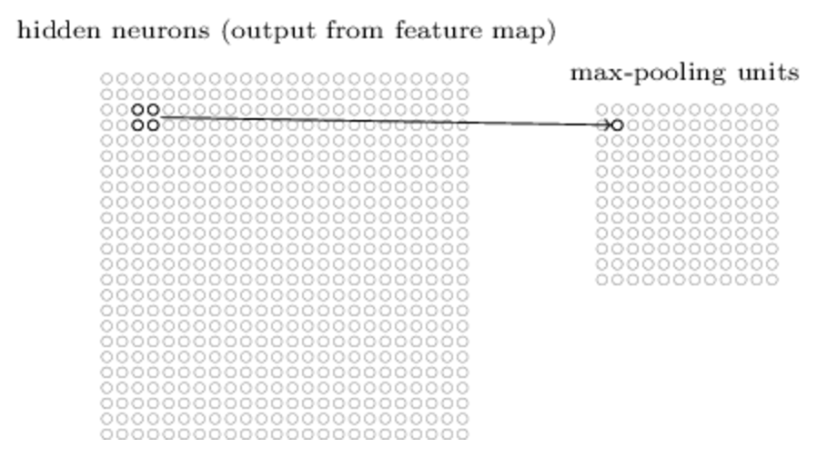
通过这样的方法，就将24*24的卷积层输出简化为了12*12的池化层输出。
池化的作用当然也可以应用在多个特征的情况下，例如下图中3个特征的情况：
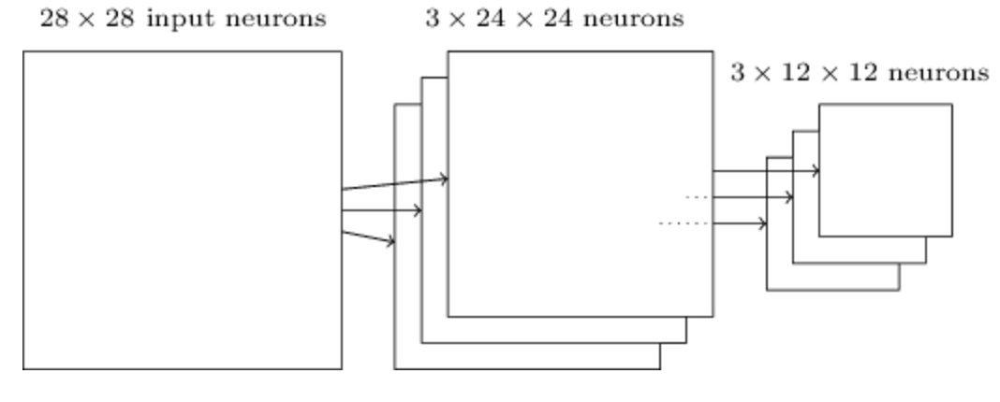
max-pooling可以看作是一种检测特征在上一层卷积层是否被检测到的方法。随后max-pooling将不再关心该特征在图像中的具体位置，而是处理特征之间的相对位置。通过这样的方法，除掉了很多不明显的特征，显著减小了后一层的参数。
除了max-pooling以外，还存在其他的池化方法。例如L2-pooling，对于2*2的窗口，它不再是求最大值，而是使用四个数的L2范数代替。虽然和max-pooling有点不一样，但是它们的目的都是为了压缩卷积层输出的信息。
总览:
将上面的卷积层，池化层和输入输出神经元结合起来就得到如下的一个简单的卷积神经网络：
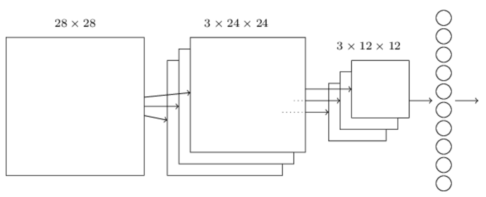
虽然结构上和之前有点不一样，但是还是有很大的共同点的。它们都是有简单的单层相互连接起来的，单层由它们自己的参数决定，输入上一层的输出，将自己的输出又作为后一层的输入这样传递下去。
在后面的内容里，我们将会用随机梯度下降算法和反向传播算法对卷积神经网络进行训练。训练方法大致和之前一样，但是对反向传播过程需要进行一些修改。因为之前的反向传播针对的是全连接的神经网络，而卷积神经网络并是部分连接的。
拓展: 卷积神经网络下的反向传播：
之前的公式bp(1)-bp(4)给出的是全连接神经网络下的反向传播方程。对于由一个输出层，一个卷积层，一个max-pooling层，一个全连接输出层的卷积神经网络，给出该情形下的反向传播方程。
二. 卷积神经网络实践
在了解了卷积神经网络的核心概念之后，再来看看它在实际中的应用。这里的代码中调用了Theano库，一来可以快速的实现卷积神经网络的反向传播算法，另外相比于我们自己的实现神经网络，Theano的计算更快速，使得我们可以实现更复杂的模型。 先从一个简答的模型开始，只有一个包含100个神经元的隐藏层的神经网络：
1 2 3 4 5 6 7 8 9 10 11 | import network3
from network3 import Network
from network3 import ConvPoolLayer, FullyConnectedLayer, SoftmaxLayer
training_data, validation_data, test_data = network3.load_data_shared()
mini_batch_size = 10
net = Network([
FullyConnectedLayer(n_in=784, n_out=100),
SoftmaxLayer(n_in=100, n_out=10)], mini_batch_size)
net.SGD(training_data, 60, mini_batch_size, 0.1,
validation_data, test_data)
|
这里在测试数据上得到了97.8%的准确率，为了避免过拟合的影响，这个准确率是在validation数据上达到最优准确率时对测试数据测得的。
和之前得到的最好的结果98.04%相比较，主要有两点不同。首先，之前的结果是在使用了正则化的基础上得到的，正则化的确可以改善结果但是并不是很大的改善，所以我们随后再考虑。其次，之前实用的是sigmoid输出层加交叉熵的组合，这里我们实用的是softmax加对数似然损失函数。这两者都可以加速神经网络的训练，后者在图像分类问题上应用的更加普遍。
接着我们试验更复杂的深度网络看看结果有没有改善。
我们在隐藏层之前添加一个卷积层，使用5*5的局部窗口，步长为1，共20个特征映射，随后使用2*2的池化窗口：
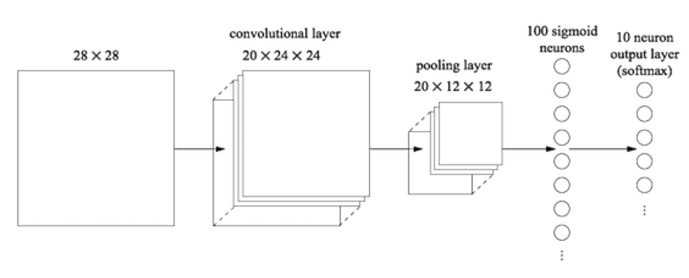
在这个结构中，卷积和池化层可以看作是学习输入图像中的局部空间的特征，随后的全连接的隐藏层的学习则是更抽象的层次，学习整个图像上的全局信息。
训练该模型：
1 2 3 4 5 6 7 8 | net = Network([
ConvPoolLayer(image_shape=(mini_batch_size, 1, 28, 28),
filter_shape=(20, 1, 5, 5),
poolsize=(2, 2)),
FullyConnectedLayer(n_in=20*12*12, n_out=100),
SoftmaxLayer(n_in=100, n_out=10)], mini_batch_size)
net.SGD(training_data, 60, mini_batch_size, 0.1,
validation_data, test_data)
|
得到了98.78%准确率，比之前的任何结果都要好。
这个结果还能继续提升吗？我们在现有卷积层和全连接的隐藏层之间再加入一个卷积层，仍然使用5*5的局部接受野和2*2的池化窗口：
1 2 3 4 5 6 7 8 9 10 11 | net = Network([
ConvPoolLayer(image_shape=(mini_batch_size, 1, 28, 28),
filter_shape=(20, 1, 5, 5),
poolsize=(2, 2)),
ConvPoolLayer(image_shape=(mini_batch_size, 20, 12, 12),
filter_shape=(40, 20, 5, 5),
poolsize=(2, 2)),
FullyConnectedLayer(n_in=40*4*4, n_out=100),
SoftmaxLayer(n_in=100, n_out=10)], mini_batch_size)
net.SGD(training_data, 60, mini_batch_size, 0.1,
validation_data, test_data)
|
这次我们得到了惊人的99.06%的正确率。
这里我们可能会有两个疑问。第一个问题是第二个卷积层表示了什么？第二个卷积层的输入是第一个卷积层输出的12*12图像，它的像素点表示了局部特征在原始图像中的出现。可以将其看作是原始图片的一个抽象压缩过的版本。由于它仍然存在一些局部空间特征，所以我们仍然可以使用第二个卷积层进行提取。
第二个问题就是既然是特殊的图像，第一个卷积层处理的原始图片只有一张，这里由于20个特征映射，也就是有20张12*12的图片，第二卷积层应该怎么处理呢？事实上，它对所有20幅图片都是可见的。也就是说，每个神经元处理20张图片中的同一块局部接受野。
使用RELU激活函数
上面的神经网络使用的都是sigmoid激活函数，我们接着试用一下RELU函数看看效果。作者还发现使用L2正则化会优化结果，于是我们使用\(\lambda = 0.1\)的L2正则化:
1 2 3 4 5 6 7 8 9 10 11 12 13 14 | from network3 import ReLU
net = Network([
ConvPoolLayer(image_shape=(mini_batch_size, 1, 28, 28),
filter_shape=(20, 1, 5, 5),
poolsize=(2, 2),
activation_fn=ReLU),
ConvPoolLayer(image_shape=(mini_batch_size, 20, 12, 12),
filter_shape=(40, 20, 5, 5),
poolsize=(2, 2),
activation_fn=ReLU),
FullyConnectedLayer(n_in=40*4*4, n_out=100, activation_fn=ReLU),
SoftmaxLayer(n_in=100, n_out=10)], mini_batch_size)
net.SGD(training_data, 60, mini_batch_size, 0.03,
validation_data, test_data, lmbda=0.1)
|
得到了99.23%的准确率，相对于99.06%来说算是一个小的进步。不过，作者表示在他的所有试验中，RELU激活函数整体都优于sigmoid激活函数，因此RELU激活函数是更好的选择。
是什么使得RELU比sigmoid效果要好呢？很遗憾，目前我们并没有理论指导如何选择激活函数，都是一些经验上或启发式的结论，类似于我们之前讨论过，RELU在输入增大的情况下不会出现saturated的状态，它可以继续学习，所以结果要好于sigmoid函数。
扩展训练数据
另外一个提升训练效果的方法就是增大训练数据集了。最简单的方法就是我们对原图片进行平移，分别向上下左右四个方向平移得到四张图片，于是原始的50000张的训练数据集就增大到了250000张。接着使用之前一样的使用RELU激活函数的结构，得到99.37%的准确率，又提升了一点。当然这个方法还有改进空间，可以通过对图像进行其他的变换更进一步扩大训练数据集。
增加全连接隐藏层
我们先试着增大之前唯一的一个全连接隐藏层的规模，分别测试了300个和1000个神经元的情况，得到了99.46%和99.43%的结果，相对99.37%来说并不是什么大的提升。
那么如果是增加一层隐藏层呢，仍然是100个神经元的隐藏层：
1 2 3 4 5 6 7 8 9 10 11 12 13 14 | net = Network([
ConvPoolLayer(image_shape=(mini_batch_size, 1, 28, 28),
filter_shape=(20, 1, 5, 5),
poolsize=(2, 2),
activation_fn=ReLU),
ConvPoolLayer(image_shape=(mini_batch_size, 20, 12, 12),
filter_shape=(40, 20, 5, 5),
poolsize=(2, 2),
activation_fn=ReLU),
FullyConnectedLayer(n_in=40*4*4, n_out=100, activation_fn=ReLU),
FullyConnectedLayer(n_in=100, n_out=100, activation_fn=ReLU),
SoftmaxLayer(n_in=100, n_out=10)], mini_batch_size)
net.SGD(expanded_training_data, 60, mini_batch_size, 0.03,
validation_data, test_data, lmbda=0.1)
|
这里的结果是99.43%，同样没有什么明显的提升。试验300和1000的双层的情况，得到99.48%和99.47%，有效果，但是并不显著。
这是为什么呢？是添加隐藏层真的没有效果还是我们的学习方式出错了呢？我们用之前介绍的dropout的方法尝试减轻过拟合的影响：
1 2 3 4 5 6 7 8 9 10 11 12 13 14 15 16 17 | net = Network([
ConvPoolLayer(image_shape=(mini_batch_size, 1, 28, 28),
filter_shape=(20, 1, 5, 5),
poolsize=(2, 2),
activation_fn=ReLU),
ConvPoolLayer(image_shape=(mini_batch_size, 20, 12, 12),
filter_shape=(40, 20, 5, 5),
poolsize=(2, 2),
activation_fn=ReLU),
FullyConnectedLayer(
n_in=40*4*4, n_out=1000, activation_fn=ReLU, p_dropout=0.5),
FullyConnectedLayer(
n_in=1000, n_out=1000, activation_fn=ReLU, p_dropout=0.5),
SoftmaxLayer(n_in=1000, n_out=10, p_dropout=0.5)],
mini_batch_size)
net.SGD(expanded_training_data, 40, mini_batch_size, 0.03,
validation_data, test_data)
|
这次的结果是99.60%，这次总算是得到了一个不错的提升了。
这里有两点参数的变化需要说一下。首先是epoch从之前的60改为了40，因为dropout减轻了过拟合，学习过程就缩短了。其次是全连接的隐藏层都使用了1000个神经元，因为dropout在训练过程中会抛弃掉很多神经元，所以适当的增加其规模是有必要的。事实上我们同样测试了300个情形，发现1000个的时候的确效果要更好。
神经网络的集成
由于初始状态的随机性，一个很简单的想法是用上面的方法训练5个不一样的神经网络。其中每个单独的准确率都在96%左右，然后用这5个模型的结果进行投票，少数服从多数，判断一张图片最终的分类。
这听起来有点简单的不可思议，但是确是神经网络或机器学习上经常使用的方法。在这里也的确获得了提升，得到了99.67%的准确率。也就是说在10000张图片中，我们只识别错了33张，来看一下这33张的结果：
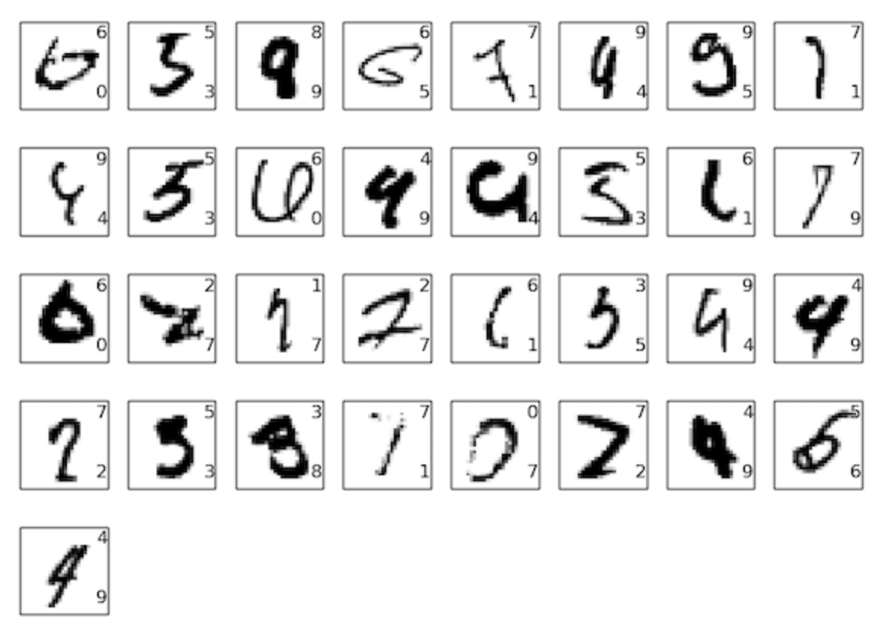
可以看到这些都是非常潦草的手写体，即便是正常的人也不一定能全部识别准确，更别说是机器了。要知道我们的机器已经识别准确9967张图片了，已经非常接近正常人的识别水平了。
为什么只在全连接隐藏层上使用dropout
细心的话可以发现之前的dropout只发生在全连接层上，为什么不对卷积层使用dropout呢？事实上可以这样做，但是没必要。因为卷积层的设计天生就可以防止过拟合。因为共享参数的设置，导致它更多的是从整张图片上去学习规律，而不是仅仅着眼于一些局部的细节。所以对于卷积层，没有必要去使用一些正则化的方法。
为什么可以训练深度网络
之前我们讨论了在神经网络层增加的时候会出现梯度不稳定的问题，我们现在为什么又能训练了呢？事实上，我们并没有避免这个问题，我们只是使用了一些方法来帮助处理：1. 使用卷积神经网络大大减少了需要训练的参数，使得训练更容易 2. 使用了更强大的正则化技术(尤其是dropout)减轻了过拟合 3. 使用了RELU激活函数加速训练 4. 使用GPU加速训练。
除此之外，我们还使用了其它的一些技术：拓展训练数据集(避免过拟合)；使用正确的损失函数(避免训练速度下降)；使用正确的参数初始化方法(避免由于神经元saturation导致的训练速度下降)。
这些技术虽然都是简单的基础技术，但是只要应用得到，将它们合理组合起来，就可以得到强大效果。
写在最后
这系列的笔记到此就结束了，由于在进行这一块学习的时候对神经网络可以说是零基础，出现错误在所难免。
以后等自己对深度学习更加理解之后再回来进行修改把。